The History of the New York Yankees MLB
team began with the founding of the AL in 1901. The Baltimore Orioles
were one of the league's original eight clubs; after two years, the organization was replaced by a New York
City-based franchise, which became known as the Yankees in 1913. The team infrequently contended for the
AL championship before the acquisition of outfielder Babe Ruth after the
1919 season. Shortly afterwards, the Yankees won their inaugural AL title
in 1921, followed by their first World Series championship in 1923. Ruth and first baseman Lou Gehrig were part
of New York's Murderers' Row batting lineup, which led the Yankees to a then-AL
record 110 wins and a Series championship in 1927. They repeated as World Series winners in 1928, and their next
title came under manager Joe McCarthy in 1932.
From 1936 to 1939, the Yankees won the World Series every year, with a team that featured Gehrig and outfielder
Joe DiMaggio, who recorded a record hitting streak during New York's 1941 championship season. The Yankees set a
major league record by winning five consecutive championships from 1949 to 1953, and appeared in the World Series
nine times during the next 11 years. Mickey Mantle, Yogi Berra, and Whitey Ford were among the players fielded by
the Yankees during the era. After the 1964 season, a lack of effective replacements for aging players caused the
franchise to decline on the field, while then-owners CBS posted financial losses.
George Steinbrenner bought the club in 1973 and regularly invested in new talent, using free agency to acquire top
players. Despite internal disputes in the late 1970s, the team reached the World Series four times between 1976 and
1981 and claimed the championship in 1977 and 1978. New York continued to pursue its strategy of signing free agents
into the 1980s, but with less success, and the team's performance declined by the late-1980s. The club's leadership
eventually began to rebuild around young players from the team's minor league system, including Derek Jeter and
Mariano Rivera. After earning a playoff berth in 1995, the Yankees won four of the next five World Series, and the
1998-2000 teams were the last in MLB to win three straight Series titles.
As the 2000s progressed, the Yankees' rivalry with the Boston Red Sox increased in intensity as the sides met
multiple times in the American League Championship Series, trading victories in 2003 and 2004. New York regularly
reached the postseason, but were often defeated in the first two rounds. In 2009, the Yankees opened Yankee Stadium
after spending most of the previous 86 seasons playing in a ballpark of the same name. That year's squad won the World
Series for the 27th time in team history. The furthest the Yankees have gone in the postseason since then is the
ALCS, which the 2010 and 2012 teams played in.
My Top Three Yankees
Joltin' Joe DiMaggio (1936-1951)
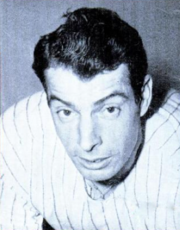With Ruth retired, Gehrig finally had
a chance to take center stage, but it was only one year before a new star appeared: Joe DiMaggio. The team would win an
unprecedented four straight World Series titles from 1936 to 1939. For most of 1939, however, they had to do it without
Gehrig, who was forced to retire because of Amyotrophic Lateral Sclerosis (ALS), now nicknamed
Lou Gehrig's Disease in his honor. The Yankees declared July 4, 1939 to be Lou Gehrig Day,
on which they retired his number 4 (the first retired number in baseball). Gehrig made a famous speech in which he declared
himself to be the luckiest man on the face of the earth. He died two years later.
Often described as the last year of the Golden Era before World War II and other realities intervened, 1941
was a thrilling year as America watched two major events unfold: Ted Williams of the Red Sox hunting for the elusive
.400 batting average and Joe DiMaggio getting hits in consecutive ballgames.
By the end of his hitting streak, DiMaggio hit in 56 consecutive games, the current major
league record and one often deemed unbreakable.
Two months and one day after the Yankees beat the Brooklyn Dodgers in the 1941 World Series, the Japanese attacked
Pearl Harbor, and many of their best players, including DiMaggio himself, went off to serve in the military. The
Yankees still managed to pull out a win against the St. Louis Cardinals in the 1943 World Series.
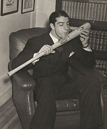In 1945 construction magnate Del Webb and partners Dan Topping and Larry MacPhail purchased the team from the
Ruppert estate for $2.8 million; MacPhail was bought out in 1947.
After a few slumping seasons, McCarthy was fired early in 1946. A few interim managers later, Bucky Harris took the
job, righting the ship and taking the Yankees to a hard fought series victory against the Dodgers.
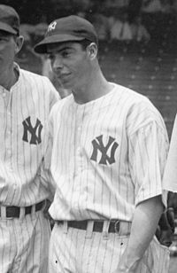Despite finishing only three games behind the first place Cleveland Indians in 1948, Harris was released in favor of
Casey Stengel, who had a reputation of being a clown and managing bad teams. His tenure as Yankee field manager, however,
was marked with success. The underdog Yankees came from behind to catch and surprise a powerful Red Sox team on the
last two days of the 1949 season, a face off that fueled the beginning of the modern Yankees-Red Sox rivalry. By this time,
however, DiMaggio's career was winding down, and the Yankee Clipper retired after the 1951 season. This year marked
the arrival of the Oklahoma Kid, Mickey Mantle, who was one of several new stars that would fill the gap.
Don Mattingly (1982-1995)
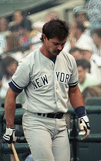Donald Arthur Don Mattingly (born April 20, 1961) is an American professional baseball first baseman,
coach and manager. Mattingly is currently the manager of the Los Angeles Dodgers of Major League Baseball. Nicknamed
The Hit Man, Don Battingly, and Donnie Baseball, he spent his entire
14-year career playing for the New York Yankees.
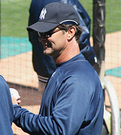Mattingly graduated from Reitz Memorial High School in Evansville, Indiana, and was selected by the Yankees in the amateur
draft. Debuting with the Yankees in 1982 after three seasons in minor league baseball, Mattingly emerged as the Yankees' starting
first baseman after a successful rookie season in 1983. Mattingly was named to the American League (AL) All-Star team six times.
He won nine Gold Glove Awards, three Silver Slugger Awards, the 1984 AL batting title, and was the 1985 AL Most Valuable Player.
Mattingly served as captain of the Yankees from 1991 through 1995, when he retired as a player.
The Yankees retired Mattingly's uniform number, 23, after his retirement. He has also received consideration for induction to the
National Baseball Hall of Fame, though he has not been elected.
Returning to the Yankees as a coach in 2004 for manager Joe Torre, he followed Torre to the Dodgers in 2008, and succeeded him as
the Dodgers' manager in 2011.
Derek Jeter (1995-2014)
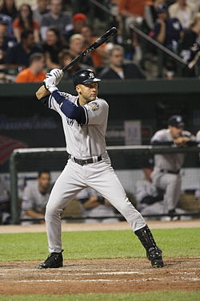Derek Sanderson Jeter (born June 26, 1974) is an American former baseball shortstop who played 20 seasons in
Major League Baseball (MLB) for the New York Yankees. A five-time World Series champion, Jeter is regarded as a central figure of the
Yankees' success of the late 1990s and early 2000s for his hitting, baserunning, fielding, and leadership. He is the Yankees' all-time
career leader in hits (3,465), doubles (544), games played (2,747), stolen bases (358), times on base (4,716), plate appearances
(12,602) and at bats (11,195). His accolades include 14 All-Star selections, five Gold Glove Awards, five Silver Slugger Awards,
two Hank Aaron Awards, and a Roberto Clemente Award. Jeter became the 28th player to reach 3,000 hits and finished his career sixth
all-time in career hits and the all-time MLB leader in hits by a shortstop.
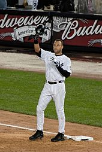The Yankees drafted Jeter out of high school in 1992, and he debuted in the major leagues in 1995. The following year, he became
the Yankees' starting shortstop, won the Rookie of the Year Award, and helped the team win the 1996 World Series. Jeter continued
to contribute during the team's championship seasons of 1998-2000; he finished third in voting for the American League (AL) Most
Valuable Player (MVP) Award in 1998, recorded multiple career-high numbers in 1999, and won both the All-Star Game MVP and World Series
MVP Awards in 2000. He consistently placed among the AL leaders in hits and runs scored for most of his career, and served as the Yankees'
team captain from 2003 until his retirement in 2014. Throughout his career, Jeter contributed reliably to the Yankees' franchise successes.
He holds many postseason records, and has a .321 batting average in the World Series.
Jeter has earned the nicknames of Captain Clutch and Mr. November due to his outstanding play
in the postseason.
Jeter has been one of the most heavily marketed athletes of his generation and is involved in several product endorsements. His personal
life and relationships with celebrities have drawn the attention of the media throughout his career. Teammates and opponents alike regard
Jeter as a consummate professional and one of the best players of his generation.
World Series Championships
The Yankees have won a leading 27 World Series in 40 appearances (which, since the first World Series in 1903, currently amounts to an
average appearance every 2.7 seasons and a championship every 4.0 seasons); the St. Louis Cardinals are second with 11 World Series victories.
The Yankees' number of World Series losses, 13, leads in Major League Baseball. The St. Louis Cardinals, Brooklyn/Los Angeles Dodgers and
New York/San Francisco Giants are second in total World Series appearances with eighteen apiece.
Of their eighteen World Series appearances,
the Dodgers have faced the Yankees eleven times, going 3–8 against the Yankees, while the Giants have faced the Yankees seven times, going 2–5
against the Yankees.[61] Among North American major sports, the Yankees' success is only approached by the 24 Stanley Cup championships of the
Montreal Canadiens of the National Hockey League, though the Canadiens haven't won a Cup championship since 1993. The Yankees have played in the
World Series against every National League pennant winner except the Houston Astros and the Colorado Rockies, a feat that no other team is even close
to matching.
Through 2013, the Yankees have an all-time regular season winning percentage of .568 (a 9947–7570 record), the best of any team in baseball.
The Yankees have won 27 World Series Championships. Their most recent one came in 2009, under manager Joe Girardi,
when they defeated the Philadelphia Phillies in six games.
Radio and Television
The Yankees Entertainment and Sports (YES) Network launched in 2002, and serves as the primary home of the New York Yankees. Michael Kay is the play-by-play announcer
with Ken Singleton, and Singleton, David Cone, Al Leiter, John Flaherty, and Paul O'Neill work as commentators as part of a three-man, or occasionally two-man, booth. Bob
Lorenz hosts the pre-game show and the post-game show with Jack Curry, and Meredith Marakovits and Nancy Newman are the on site reporters. Some games are telecast on WWOR-TV;
those broadcasts are produced by YES.
Radio broadcasts are on the Yankees Radio Network, the flagship station being WFAN 660 AM, with John Sterling as the play-by-play announcer
and Suzyn Waldman providing the commentary, with Spanish-language broadcasts on WADO 1280 AM.
The history of Yankee radio broadcasters is:
WABC 770 (1939-40)
WOR 710 (1942)
WINS 1010 (1944-57)
WMGM 1050 (1958-1960)
WCBS 880 (1961-1966)
WHN 1050 (1967-1970)
WMCA 570 (1971-1977)
WINS 1010 (1979-1980)
WABC 770 (1981-2001
WCBS 880 (2002-2013)
WFAN (AM) 660 (2014-PRESENT)
WFAN (FM) 101.9 (2014-PRESENT)
Gallery of Retired Numbers
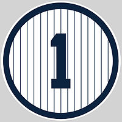Billy Martin began his major league career in 1950 as a second baseman for the Yankees.
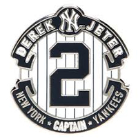Derek Jeter is considered to be one of the most consistent baseball players of all time.
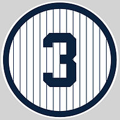George Herman Babe Ruth, Jr. was an American baseball outfielder and pitcher who played 22 seasons in Major League Baseball from 1914 to 1935.
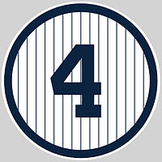Lou Gehrig was renowned for his prowess as a hitter and for his durability, a trait which earned him his nickname The Iron Horse.
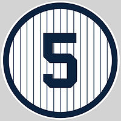Joe DiMaggio was a three-time MVP winner and an All-Star in each of his 13 seasons.
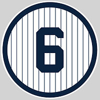Joe Torre had the greatest success of his managerial career with the Yankees, leading them to the playoffs in each of his 12 seasons with the club.
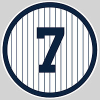Mickey Mantle was a Major League Baseball centerfielder and first baseman for the New York Yankees for 18 seasons, from 1951 through 1968.
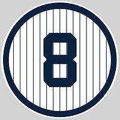During Bill Dickey's playing career, the Yankees went to the World Series nine times, winning eight championships.
Yogi Berra is widely regarded as one of the greatest catchers in baseball history.
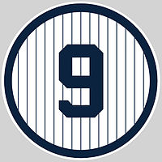Roger Maris appeared in seven World Series, five as a member of the Yankees and two with the Cardinals.
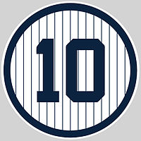Phil Rizzuto spent his entire 13-year baseball career with the New York Yankees, and was elected to the National Baseball Hall of Fame in 1994.
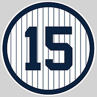Thurman Munson was considered the heart and soul of the Yankees and was named the first team captain since Lou Gehrig.
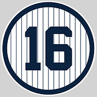Whitey Ford spent his entire 16-year career with the New York Yankees. He was voted into the Baseball Hall of Fame in 1974.
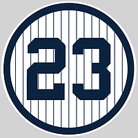Don Mattingly was nicknamed The Hit Man, Don Battingly, and Donnie Baseball, he spent his entire 14-year career playing for the New York Yankees.
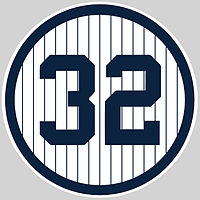Elston Howard is one of the most regular World Series participants in history, he appeared in ten of them, winning six.
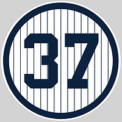Casey Stenge was nicknamed The Old Perfessor, he was an American Major League Baseball outfielder and manager. He was elected to the Baseball Hall of Fame in 1966.
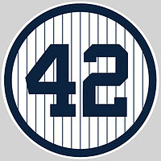Mariano Rivera is a thirteen-time All-Star and five-time World Series champion, he is MLB's career leader in saves (652) and games finished (952).
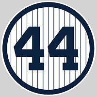Reggie Jackson was inducted into the Baseball Hall of Fame in 1993. The Athletics and Yankees both retired his uniform number.
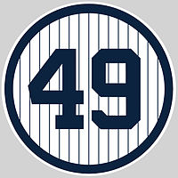Ron Guidry won the AL Cy Young Award in 1978 as the best pitcher in the AL. He also won five Gold Glove Awards and appeared in four All-Star games.